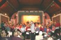

|
Twyford Singers Formed in 1974 by its first conductor, Dr Alwyn Surplice, our choir has grown from about 30 to around 80 and we still have three of the founding members within our ranks. Other past conductors have been John Lunt, Alan Mottram and Peter Parfitt and we are very fortunate to have Derek Beck as our present conductor. From early September to mid- May, with some breaks for school holidays, rehearsals are held in Shawford Parish Hall between 7.30 and 9.30 pm every Tuesday. We are constituted as a registered charity and are known formally as Twyford Singers (Hampshire), in order to differentiate us from our Twyford (Berkshire) cousins! We give two main concerts per year. The first is usually held in February or March, and normally alternates on an annual basis between Twyford Parish Hall and an ecclesiastical venue, such as St Cross Chapel. The Parish Hall concert normally presents 'lighter' works, such as G&S's Trial by Jury, Hurd's Hip Hip Horatio and Horovitz's Horrortorio. The church performances are normally of sacred works, for example Rossini's Petite Messe Solonnelle or Rutter's Requiem and Magnificat. Professional vocalists and instrumentalists frequently support our programmes. Our very popular 2011 concert in Twyford Parish Hall featured Andrew Lloyd-Webber's and Tim Rice's Joseph and his Amazing Technicolor Dreamcoat and our 2012 concert in St Cross Chapel gave a well-attended performance of Haydn's Stabat Mater. Our 2013 concert, taking place in Southampton Central Hall, along with the choir of Twyford School, was a performance of Alexander L'Estrange's exciting Zimbe, based on African songs. Our most recent concert, in St Cross Chapel, was a Purcell programme, which included O Sing unto the Lord a New Song and Come ye Sons of Art away. In 2017, it’s back to Twyford Parish Hall for a Down Memory Lane performance of songs from Novello, Kern and Coward. For our second concert of the year, we team up with other local choirs in the Winchester and County Music Festival, the venue being either Winchester Cathedral or Romsey Abbey. Our most recent performance has been in Elgar's Dream of Gerontius and in the past, performances have included Jenkins' Armed Man, Orff's Carmina Burana and Verdi's Requiem. In addition, we sing carols at The Phoenix Inn, Twyford, to raise funds for a chosen local charity. Our main social events of the year are an Annual Dinner in March/April and a "bring and share supper", following the AGM in June. We also, from time to time, arrange "skittles evenings" at The Phoenix Inn. We are financially sound and are often able to make significant charitable donations from the proceeds of our own concert. The choir is also a member of Making Music, the National Federation of Music Societies. Contact the Society
Secretary: Margaret Bridport
|
Click image to view  |